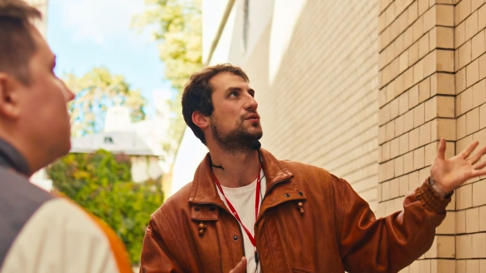

Портфолио
Каждый проект создан с учётом целей клиента: акцент на качество съёмки, монтажа и звука.




Обо мне
Услуги и цены
Пакет «Старт»
от 500€
- ✓ 1 съемочный день (до 4 часов)
- ✓ Монтаж 1-2 роликов (до 1 мин.)
- ✓ Базовая цветокоррекция
- ✓ Идеально для соцсетей
Пакет «Оптима»
от 1200€
- ✓ 2 съемочных дня
- ✓ Монтаж до 5 роликов
- ✓ Проф. цветокоррекция
- ✓ Саунд-дизайн
«Премиум»
По запросу
- ✓ Полное погружение в проект
- ✓ Разработка сценария
- ✓ Сложная графика и анимация
- ✓ Для фильмов и муз. клипов
Привет, я Фёдор!
Я специализируюсь на создании видео для бизнеса, событий и личных проектов. Мой процесс включает анализ задачи, разработку концепции, съемку с использованием профессионального оборудования (например, камеры Sony FX, стабилизаторы и освещение) и постпродакшн в программах вроде DaVinci Resolve Studio, After Effects и другие. Я сотрудничаю с клиентами на всех этапах, чтобы обеспечить точное соответствие видению и бюджету, с фокусом на достижение измеримых результатов — будь то рост вовлеченности аудитории или повышение узнаваемости бренда.